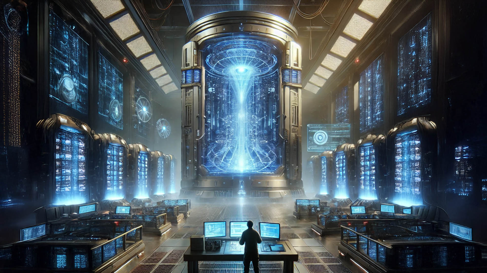

Часть первая
Глядя через широкое окно на будничную суету на улицах города, Сержeн сделал очередной глоток. В
гранатово-красном
стакане из редкого саранита благоухал мягким мятным запахом зеленоватый напиток.
«Не рано ли…» — задумался он, сделав очередной глоток, который приятным теплом раскатился
внутри. — «Хотя совет уже
созван, и передумать уже поздно…»
Он поставил стакан с остатками напитка на широкий стеклянный стол и нажал кнопку вызова на
селекторе.
— Пригласите ко мне профессора Харри Лидена, он уже должен быть в здании, насколько я знаю.
Селектор пикнул, и механический голос дроида-секретаря услужливо отчеканил:
— Профессор Харри Лиден прибыл 21 минуту назад. Я немедленно передам ему ваше предложение.
Сержан опустился в широкое мягкое кресло и погрузился в глубокое раздумье, снова глядя в
окно.
Через несколько минут, отозвавшись коротким сигналом, распахнулась широкая дверь в комнату.
Профессор Харри Лиден —
мужчина в почтенном возрасте, с аккуратной чёрной бородкой и спокойным, чуть усталым взглядом —
уверенным шагом
проследовал внутрь. Под мышкой у него была бумажная папка с документами, а в движениях
чувствовалась привычная
размеренность человека, который давно живёт в мире точных формул и не терпит суеты. Он
остановился в двух шагах от
кресла Сержана, слегка склонил голову в приветствии и ждал, пока хозяин кабинета заговорит
первым.
— Вы хотели меня видеть?
Сержен развернулся, встал с кресла и приветственно протянул профессору руку.
— Да, профессор Лиден. Перед началом конференции я бы хотел с вами кое о чём поговорить.
И они оба сели, развернувшись друг к другу.
Сержен вчера вечером отправил лидерам двух звёздных систем сообщения о том, что инициирует
сегодня утром научную
конференцию Альянса, на которой сообщит интересную научную новость. (Инициировать научную либо
какую другую конференцию
было обычным событием в Альянсе, когда кто-либо из троих лидеров собирался сообщить остальным
важную новость, либо
поделиться результатами исследований, либо предложить совместный проект — согласно правилам
«Кодекса Альянса о взаимном
сотрудничестве во всех сферах деятельности».) Сержен инициировал собрание Альянса на 10:00
сегодняшнего дня.
— Профессор Лиден, до общего собрания осталось фактически полтора часа. Я уверен, у вас
полностью готов доклад со всеми
деталями и подробностями.
— Да, мистер Харинек. В этой папке, — он лёгким кивком указал на папку, лежащую на коленях, — в
бумажном виде описаны
все технические характеристики, а также результаты абсолютно всех наших исследований и тестов.
Всё готово в полном
объёме.
— Мы можем… — лёгким жестом руки прервал его Сержен и медленно наклонившись в сторону
профессора, понизил тон до
какого-то «шпионского». — …огласить, так сказать, не совсем все данные. Описать в общем
свойства, характеристики… ну то,
что вы считаете нужным, а более важные детали ваших экспериментов — пока оставить только под
нашим надзором. Временно.
Может, не стоит так сразу открывать прям такие все карты. Вы, все наши учёные, без посторонней
помощи трудились над
открытием, и я считаю… — он продвинулся ещё ближе к профессору, — …вы вправе оставить себе
чуточку больше, чем должны
знать остальные.
Сержен настолько близко подвинулся с креслом к профессору, что чувствовал приятный запах свежей
бумаги документов в
папке на руках профессора.
— Как вы считаете, справедливо? — Сержен, глядя прямо в мудрые глаза профессора, язвительно
слегка прищурил один
глаз.
— Как я вам уже говорил, мистер Харинек, вы, может, не придали этому какого-либо значения, так
вот я повторюсь ещё раз.
Все данные, которые находятся в этой папке… — он похлопал рукой по папке, словно это был его
давний друг, —
…взаимосвязаны между собой. То есть все тесты, пробы, выводы тесно связаны с характеристиками.
Характеристики в свою
очередь связаны с условиями экспериментов, а эксперименты — с исходными пробами и параметрами их
проведения. Всё
представляет собой единую, неразрывную цепь: если доказать или скрыть что-то одно, это неизбежно
искажает или
обессмысливает всё остальное. Нельзя вырвать одно звено, не разрушив картину целиком. Содержимое
папки — это информация
такого рода, которая должна быть либо оглашена в полном объёме, либо не оглашена вовсе.
Частичная подача здесь
неприемлема.
— Значит, всё или ничего… — тихо, почти шёпотом, произнёс Сержен, откидываясь назад. — Вы,
профессор, всегда были
принципиальны до неприличия. - и взял в руки стакан с недопитым напитком .— Вы мне говорили это
и не один раз, я всё
прекрасно помню. Но всё же, неужели… — он прервался и обратился к профессору с глубоким
вопросительным взглядом.
— Категорически нет, — окончательно отрезал профессор.
— Значит, так тому и быть, — допив напиток одним большим глотком, Сержен встал с кресла и сделал
шаг в сторону
профессора. — Через час все, и я в том числе, будем ждать от вас полного и красочного описания
нашего нового открытия. Я
уверен, что мы… Вы… удивите всех не меньше, чем нас удивили не так давно наши партнёры. Я
уверен, что все оценят ваш с
коллегами труд также высоко, как ценю его я.
— Не сомневайтесь, мистер Харинек. Как минимум учёные других систем будут в восторге от
появления новой пищи для
размышлений.
Твёрдо пожав руку Сержену, профессор Лиден направился к выходу, водрузив папку с документами
снова под мышку.
— Очень жаль… — громко произнёс Сержен расстроенным тоном в пустоту комнаты, когда закрылась
дверь за профессором. —
Очень жаль…
Он постоял ещё несколько секунд, глядя на закрытую дверь, затем медленно вернулся к окну. За
стеклом город жил своей
обычной жизнью: люди спешили по делам, транспорт скользил по воздушным коридорам, солнце
отражалось в зеркальных фасадах
зданий. Но для Сержена всё это вдруг стало фоном — далёким и неважным.
Он опустил взгляд на пустой стакан в руке. Аромат мяты ещё витал в воздухе, но теперь он казался
горьким.
«Полное раскрытие… — подумал он. — Значит, Никаких козырей в рукаве. Никакой форы. Всё на
равных. Жаль...».
Сержен поставил стакан на стол с тихим стуком.
Через час начнётся конференция и расклад поменяется.
Но не так, как он хотел бы...
Часть вторая
В конференц-зале здания "Принятия решений" планеты Корса собрался самый узкий круг — те, кто
решал судьбу Альянса.
Сержен Харинек, как хозяин, сидел во главе стола, его лицо — смесь спокойствия и лёгкого
ухмылки.
Напротив по
галосвязи — Владек Курен, строгий и собранный, с планшетом в руках.
Легард Шедоу подключился по
галосвязи последним, его
голограмма появилась в красле со строгой сосредоточенностью.
Рядом с каждым лидером — ведущие
учёные: доктор Эммид Баун
с Элайи, профессор Пол Сэменс с Лиары и, конечно, профессор Харри Лиден с Корсы — человек,
который явно готовился к
главному слову.
Атмосфера была сосредоточенной и деловой. Все знали: Сержен созвал эту встречу не зря. Тибарий
уже менял всё — от
энергетики до кораблей. Но что-то новое витало в воздухе.
После коротких приветствий перешли к делу .Сержен взял слово, его голос был ровным, но слегка
нервным:
- Итак ,я созвал совет Альянса чтобы сообщить об интересном открытии.Предоставлю слово тому ,
кто это открытие
совершил.Профессор Лиден, вы готовы?
Харри Лиден кивнул, его седые волосы ровно уложены назад, глаза горят — типичный вид учёного на
пороге
открытия.
— Готовы, мистер Харинек. Давайте начнём.
Профессор Лиден встал, активировал голографический проектор в центре стола. Над поверхностью
возникли изображения:
зелёные кристаллы Тибария, которые все уже знали, и рядом — новые, гранатового цвета,
тёмно-красные, как сгустки свежей
крови под светом звёзд.
— Господа ,- начал он слегка сиплым но громким и чётким голосом, - во время сортировки Тибария,
добытого из шлейфа кометы, наши техники наткнулись на
это, - он ткнул лазерной указкой в галаграмму, - Кристаллы глубокого
гранатового цвета — их очень мало, найдено всего пара десятков на всю партию.
В зале была гнетущаая тишина. Все смотрели не на професора а на кроваво красные обьекты
галограммы.
- Отобрав найденые обьекты мы провели "стандартные" для Тибария тесты. Результат , коллеги -
плачевен. Они
не дают энергии, как
зелёные , совсем никакой. Ни при стандартном облучении, ни при повышенной интенсивности
лучей. Вообще никакой реакции. Сначала мы подумали: брак,
выродившиеся элементы... Но как вы все понимаете - ничего в мире не существует просто так..
И позже … решили проводить эксперементы различного характера. Во время очередного теста в
комбинации с электромагнитным
полем высокой частоты мы стали бомбить кристаллы атомами ирридия. И вот , коллеги,
они повели себя нетипично. Оживились. Не энергией — а числами -
вычислениями.
Воздух в зале вздрогнул. Профессор Харри Лиден наклонился ближе к голограмме, доктор Эммид Баун
прищурился и затряс
седыми усами, а Сержен позволил себе лёгкую улыбку — он уже знал, но с нетерпением ждал взрывной
реакции.
— Вычисления? — переспросил Эммид Баун, его голос был импульсивным и с ноткой сомнения. — Как
именно? Это же кристаллы,
не процессоры.
Профессор Лиден жестом в сторону галограммы сильно увеличил изображение: красный кристалл
пульсировал, внутри него метались тонкие
линии света, как нейронные
связи в мозгу.
— При определённых условиях — облучении электромагнитным полем с переменной частотой,
имитирующей квантовые колебания, —
эти кристаллы начинают обрабатывать данные с невероятной скоростью. Они не просто ведут
вычисления —
они "предугадывают",
моделируют сценарии, решают задачи.Я предоставлю результаты эксперементов. Наши самые
продвинутые компьютеры обсчитывают сложнейшие
процессы несколько минут,
эти кристаллы - секунды а то и доли секунд. Это как… живой мозг, заключённый в камень. Мы
протестировали: симуляции
сложных процессов,
гравитационных инертных полей, даже банально - прогнозы погоды на планете — всё мгновенно, без
ошибок.
Шок повис в воздухе. Доктор Эммид Баун, сидящий слева от Легарда, откинулся в кресле, его глаза
загорелись.
— Невероятно… — пробормотал он. — Если это то, о чём я могу предполагать… Это не просто
энергия.. , Это разум, пульсар
мне в колбу ....
Владек нахмурился, его прагматизм взял верх:
— А сколько их? И почему вы не сообщили раньше? Мы сортировали часть своей партии Тибария, но
ничего подобного не нашли.
Сержен поднял руку, успокаивая:
— Потому что их мало — чуть более десятка на всю добычу. И наши учёные наткнулись на них
первыми. Мы не скрывали —
просто проверяли. Теперь всё на столе.
Легард упрекая обратился к опоненту .
— Сержен, ты мог бы сообщить об этом открытии сразу. Мы в Альянсе — не конкуренты, а партнёры.
Согласно "Научному
кодексу", такие вещи не держат в тайне.
Сержен усмехнулся, откинувшись в своём кресле — как всегда, с долей иронии.
— А ты, Легард, о новом двигателе на Тибарии тоже не сразу всем сообщил. Помнишь? Мы ждали почти
месяц, пока ты не
провёл тесты. Это то же самое — осторожность, не секретность. Давай не будем копаться в
прошлом.
Легард переглянулся с Владеком, который молча кивнул: упрёк был справедлив, но сейчас не время
для споров.
- Один - один ... Признаю ... Хотелось бы в будущем не повторять таких "осторожностей" . Со
своей стороны - даю слово.
Но давайте к делу , об этом позже.
— Хорошо. Но если это вычислительная мощь… Что дальше?- он обратил взор на доктора Эммида ,
будто ожидая какого-то
ответа.
— Это не кристалл. Это… скорее мозг в миниатюре, - продолжал Профессор Лиден прерваную речь. - И
если теоретически
собрать их вместе и придав им определённую задачу, то тогда...
Реакции посыпались одна за другой. Профессор Пол Сэменс с Лиары — коллега Лидена — наклонился к
экрану, его лицо
осветилось голограммой.
— Если это вычислительные способности… Представьте: моделирование самых сложнейших процессов за
минуты. Или предсказание
траекторий комет с точностью до метра. Но почему только красные? И что с зелёными? Они дополняют
друг друга?
Лиден кивнул, его голос стал серьёзнее:
— Мы считаем, возможно да. Зелёные — массивная энергия. Красные — быстрый разум. В комбинации…
это
может быть прорыв для
вычислений. Но их катастрофически мало. Мы нашли всего около десятка. Если другие системы
проверят свои партии Тибария —
возможно, найдутся ещё и тогда...- он бросил взгляд на доктора Эммида, который уже не замечал
вокруг никого и был в
своём внутренем научном мире - ... возможно наши компьютеры получат "мозг" не на
сверхпроцессорах а на более "живой"
материи.
Шок перешёл в возбуждение. Владек, всегда прагматик, спросил первым:
— И что теперь? Соберём все? Создадим… что-то общее? Супер-мозг? Это однозначно шаг вперёд. При
условии - чёткая задача
и работа вместе как одно целое ...
- Согласен , - Легард встал , - если хотим и можем создать новый "инструмент" - то с этой минуты
не должно быть "Я" .
Только "МЫ"...
Сержен улыбнулся. Это однозначно прорыв .И он узнал об этом первым ...
Альянс крепок, но такие открытия всегда сеют семена сомнений и возможных раздоров. Но было
решено - работа вместе и
никаких сокрытий. Для общего блага . По другому - никак ...
Конференция закончилась общим решением: тщательная сортировка всех запасов в каждой
системе.Честный и максимально точный
аудит всего найденого количества.Главное - Создание общего центра для совместного изучения и
доработок.
Но в воздухе осталась
новая интрига — кто и как будет контролировать этот «мозг»?
Сержен отключил связь и откинулся в кресле. "Разум в кристалле… Это не просто технология. Это
возможная сфера
влияния". Но "Только вместе и никаких интриг. Хм...".
Эти же мысли возникли и у остальных участников ...
Часть третья
После конференции Альянса началась долгая и кропотливая проверка всех стратегических запасов
Тибария в каждой системе.
Хранилища вскрывались одно за другим. Контейнеры тщательно проходили повторный
анализ. Специальные группы в строгой
секратности внимательно перебирали практически все кристаллы, проверяя их на спектр и
энергетический отклик , а так же
на наличие каких-либо аномалий или отклонений.
И вскоре стало ясно — находка учёных системы Сержена не была случайностью.
Красные кристаллы действительно существовали.
Но их оказалось пугающе мало.
Когда проверки закончились, общий отчёт был коротким и почти разочаровывающим: во всех системах
Альянса удалось найти
менее четырёх десятков красных кристаллов. Их было настолько мало, что использовать их в
отдельных исследованиях
означало бы растратить шанс понять их истинную природу.
Поэтому на втором заседании научного совета было предложено другое решение.
Не изучать кристаллы по отдельности.
А объединить их и создать совместную группу для понимания наиболее эффективного применения.
Создать систему, в которой их свойства могли бы проявиться полностью.
Началась самая сложная часть проекта — попытка понять, как заставить красные кристаллы работать
вместе.
Первые недели ушли на десятки неудачных экспериментов. Учёные подавали на кристаллы
электрические сигналы, лазерные
импульсы, квантовые пакеты данных. Но каждый раз результат оказывался одинаковым: кристаллы не
реагировали так, как
обычные вычислительные элементы.
Они не усиливали сигнал.
Не преобразовывали энергию.
И не хранили информацию в привычном смысле.
Но постепенно исследователи заметили одну странную особенность.
Кристалл почти не задерживал проходящий через него сигнал.
Информация, переданная через его структуру, проходила практически мгновенно, словно внутри
материала отсутствовало само
понятие сопротивления.
Именно тогда родилась новая гипотеза.
Красные кристаллы Тибария не являются источником энергии и не служат обычными элементами памяти.
Их структура работает
иначе — они являются идеальной средой для передачи и синхронизации информации.
Фактически кристалл представлял собой естественный информационный канал, в котором сигнал не
терял форму, не искажался и
не замедлялся.
Когда учёные начали соединять несколько кристаллов в одну сеть, стало происходить нечто ещё
более необычное.
Сигналы, проходившие через один кристалл, начинали резонировать с сигналами в соседних.
Это означало, что кристаллы не просто передавали информацию — они синхронизировали её между
собой.
Так родилась идея проекта, получившего рабочее название «С.КО.М.»( Сверхбыстрый Компьютерный
Мозг).
В отличие от обычных компьютеров, где информация проходит через миллиарды транзисторов, в
«С.КО.М.» вычисления
происходили иначе.
В центре системы находилась кристаллическая сеть — несколько десятков красных кристаллов,
связанных энергетическими и
квантовыми каналами.
Когда в систему поступал запрос, он не проходил через цепочку вычислений шаг за шагом.
Вместо этого сигнал распространялся по всей кристаллической структуре одновременно.
Каждый кристалл становился частью огромной резонансной схемы.
Информационный поток отражался внутри этой сети, многократно взаимодействуя с соседними узлами.
В процессе этого
взаимодействия структура сигналов изменялась, формируя новые комбинации — фактически создавая
вычислительный результат.
Со стороны это выглядело почти как естественный процесс мышления.
Кристаллы не выполняли команды последовательно.
Они искали устойчивое состояние информационного поля, соответствующее ответу на поставленную
задачу.
Именно поэтому скорость системы оказалась настолько высокой.
Большинство вычислений происходило не за секунды или миллисекунды, а почти мгновенно, потому что
весь объём данных
обрабатывался одновременно всей кристаллической сетью.
Внешние модули станции выполняли роль интерфейса между человеческими системами и этим необычным
вычислительным ядром.
Они переводили запросы в сигналы, понятные кристаллической сети, а затем интерпретировали
полученные результаты.
Таким образом «С.КО.М.» был в состоянии выполнять задачи, которые раньше считались
маловозможными либо вычислялись
относительно долго и по традиции требовали проверки.
Он был в состоянии анализировать миллионы вариантов развития событий не как мощная машина а как
сверходарённый человек.
Обрабатывал колоссальные объёмы информации выдавая максимально логические , с точки зрения
человека ,результаты.
Но самым поразительным оказалось другое.
Чем больше задач проходило через кристаллическую сеть, тем быстрее она начинала находить
решения.
Некоторые учёные объясняли это эффектом самооптимизации структуры сигналов. Другие предполагали,
что система постепенно
формирует устойчивые информационные связи, подобные нейронным путям в биологическом мозге
человека.
И всё чаще в научных отчётах появлялась осторожная настораживающая формулировка:
кристаллическая сеть комплекса «С.КО.М.» может обладать элементами самообучающейся структуры.
Пока это оставалось лишь гипотезой.
Но некоторые учёные, работавшие рядом с вычислительным ядром станции, признавались, что иногда
система выдаёт ответы на
вопросы быстрее, чем оператор успевает завершить формулировку запроса.
И это заставляло некоторых из них задаваться тревожным вопросом, который всё чаще обсуждался в
кулуарах научного совета.
Если красные кристаллы действительно являются носителями какой-то формы разума…
то, возможно, «С.КО.М.» не просто вычисляет.
Возможно, он начинает думать?
Это вызывало определённые опасения.
Немедленно было принято
категоричное и обязательное
решение - комплекс не должен быть подключён ни к какой внешней сети. Полностью автономен и не
должен "знать" о
существовании какой-либо информации вокруг кроме той , что в него вкладывают. После каждого
исследования или работы -
абсолютно все данные извлекались и комплекс подвергался глубокой информационной очистке.
Это
было железное правило номер
один , не выполнение которого грозило исключением из проекта и возможного наказания.
Все чётко осозновали - нельзя выпускать на волю тот "разум" о котором мало что известно и
который уже по факту
превосходил разум всех учёных вместе взятых.
Контроль и пользование этим "ресурсом" было решено осуществлять в строжайшем порядке доступа
между тремя участниками.
Пока шло строительство - разрабатывался порядок доступа , использования и секретности полученых
данных каждой стороной ,
очистка памяти и всех инфоследов в системе.
Доступ должен быть единоразовым в моменте и полным
инфообнулением по
завершению процесса. Создавался строгий "Кодекс Доступа и Пользования Обьектом".
Решение было логичным и принято на самом высоком уровне.
Строительство комплекса решили вести на орбите планеты Корса, звёздной системы Сержена ,
так как именно его учёные
первые обнаружили "новинку" - по справедливости .
Именно на орбите а не на самой планете - так как в космосе легче собрать эффективную систему
охлаждения ( а работа всего комплекса требовала высокой нагрузки сопутствующих систем и их
высокому нагреву).
Даже инженеры, привыкшие к проэктированию космических станций, признавали, что проект получается
необычным и специфическим.
Огромные фермы силового каркаса собирались прямо в невесомости, постепенно формируя
цилиндрическую камеру — будущий
центр системы.
Его ядро представляло собой цилиндрическую конструкцию, окружённую двумя кольцами обслуживающих
помещений .
Внутри
цилиндра располагалась главная кристаллическая камера — герметичный отсек, где должны были
находиться красные кристаллы.
Сама камера напоминала скорее научный эксперимент, чем компьютер.
Каждый кристалл устанавливался в отдельный держатель с магнитной подвеской. Это позволяло
удерживать его в абсолютно
стабильном положении, не допуская даже микроскопических вибраций. Вокруг держателей
располагались десяток сенсорных
узлов и передающих модулей, способных фиксировать малейшие изменения информационных потоков
внутри кристаллов.
Из найденных кристаллов 3\4 была использована для создания вычислительного ядра. Остальные
решили сохранить в резерве —
на случай повреждений или дальнейших исследований.
Инженеры расположили кристаллы в сложной пространственной структуре, напоминающей многослойную
сферу.
Со стороны это выглядело так, словно внутри станции собирали искусственное созвездие — несколько
десятков красных точек,
соединённых тончайшими энергетическими каналами.
Когда монтаж завершился, центральная камера стала сердцем всей станции.
От неё расходились десятки кабелей, энергетических магистралей и каналов передачи данных.
Внешние модули комплекса
занимались обработкой информации, энергоснабжением и связью .
Учёные понимали, что создают не просто вычислительную машину.
Потому что если расчёты окажутся верны, то внутри орбитальной станции вскоре начнёт работать
самый мощный разум,
когда-либо созданный цивилизациями Альянса.
